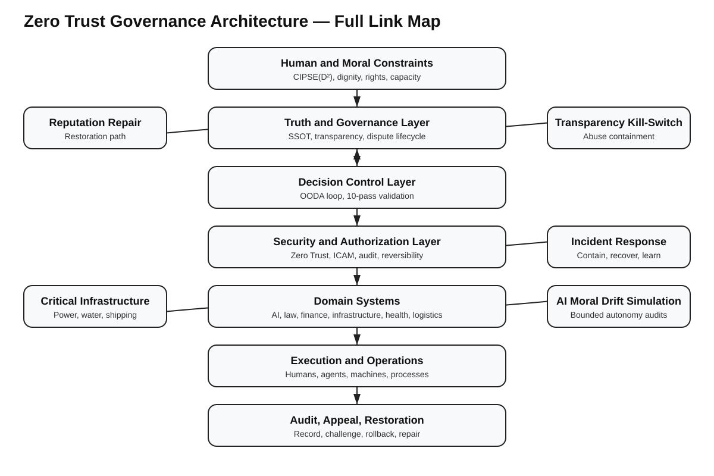
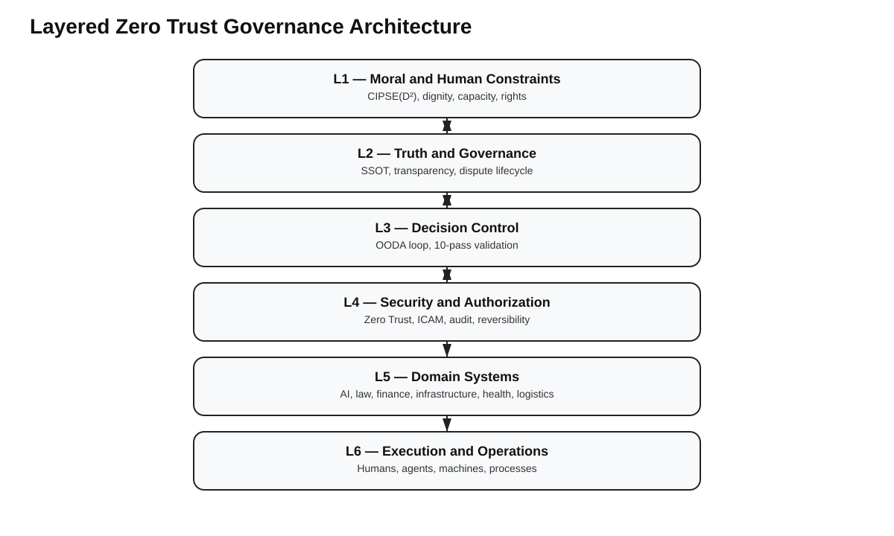
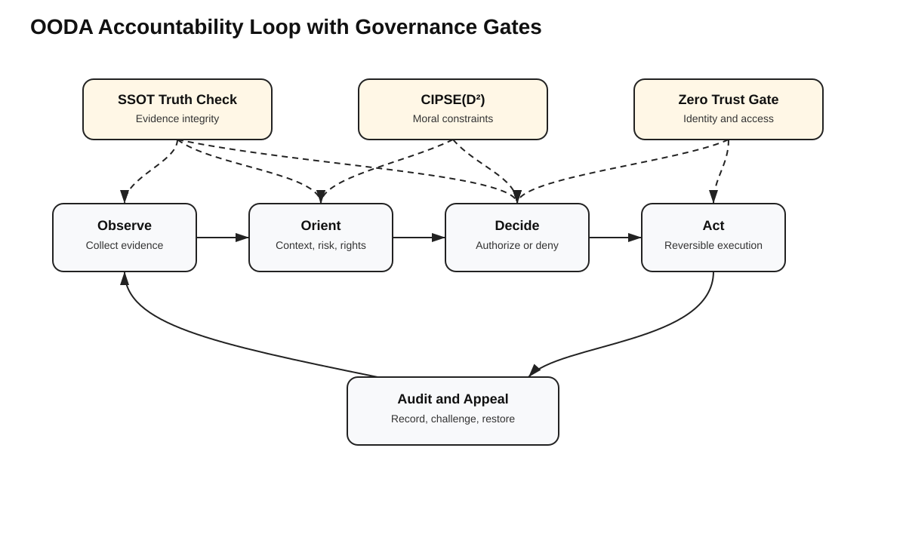

This file mirrors conversation.md. SVG diagrams are embedded below.



# Conversation Transcript and Diagram Package
## User Request
> Need a good diagram to see how everything links please
## Assistant Response
The fastest way to make this click is to see it as stacked layers with controlled feedback loops, not a spiderweb.
---
# Zero Trust Governance Architecture — System Diagram
## Core Idea
At the center of the architecture:
> **SSOT + OODA + CIPSE(D²)**
Nothing acts without passing through those three control systems.
---
## 1. High-Level System Map
```mermaid
flowchart TD
A[Human and Moral Constraints\nCIPSE(D²), dignity, rights, capacity] --> B[Truth and Governance Layer\nSSOT, transparency, dispute lifecycle]
B --> C[Decision Control Layer\nOODA loop, 10-pass validation]
C --> D[Security and Authorization Layer\nZero Trust, ICAM, audit, reversibility]
D --> E[Domain Systems\nAI, law, finance, infrastructure, health, logistics]
E --> F[Execution and Operations\nHumans, agents, machines, processes]
F --> G[Audit, Appeal, Restoration]
G --> B
B <--> H[Reputation Repair]
B <--> I[Transparency Kill-Switch]
D <--> J[Incident Response]
E <--> K[Critical Infrastructure]
E <--> L[AI Moral Drift Simulation]
```
---
## 2. Layered Architecture
```mermaid
flowchart TB
L1[L1 — Moral and Human Constraints\nCIPSE(D²), dignity, capacity, rights]
L2[L2 — Truth and Governance\nSSOT, transparency, dispute lifecycle]
L3[L3 — Decision Control\nOODA loop, 10-pass validation]
L4[L4 — Security and Authorization\nZero Trust, ICAM, audit, reversibility]
L5[L5 — Domain Systems\nAI, law, finance, infrastructure, health, logistics]
L6[L6 — Execution and Operations\nHumans, agents, machines, processes]
L1 --> L2 --> L3 --> L4 --> L5 --> L6
L6 -. feedback .-> L3
L6 -. audit evidence .-> L2
L3 -. escalation .-> L1
```
### Rule
Lower layers can never override higher layers.
---
## 3. Core Control Loop
```mermaid
flowchart LR
O[Observe\nCollect evidence] --> R[Orient\nContext, risk, identity, rights]
R --> D[Decide\nAuthorize or deny]
D --> A[Act\nExecute reversible action]
A --> AU[Audit and Appeal\nRecord, challenge, restore]
AU --> O
SSOT[SSOT Truth Check] --> O
SSOT --> R
SSOT --> D
CIPSE[CIPSE(D²) Moral Constraints] --> R
CIPSE --> D
ZT[Zero Trust Gate] --> D
ZT --> A
```
---
## 4. Domain Integration Pattern
Every domain follows the same authorization spine:
```text
DOMAIN SYSTEM
↓
Zero Trust Access
↓
SSOT Truth Check
↓
OODA Decision Gate
↓
CIPSE(D²) Constraint Check
↓
Action, reversible where possible
↓
Audit, appeal, correction, restoration
```
### Examples
- **AI** → bounded autonomy, kill-switches, moral drift audits
- **Law enforcement** → due process and appeal paths
- **Infrastructure** → human override and redundancy
- **Finance** → transparency and anti-concentration brakes
No domain is sovereign. No actor gets unchecked authority.
---
## 5. Why the Architecture Holds
The architecture prevents collapse because:
- No single actor controls truth.
- No system can act without justification.
- No automation is irreversible by default.
- No authority is immune to appeal.
It still preserves operational speed because emergency action can occur, but it remains subject to post-action audit, rollback, and restoration.
---
## User Request
> can you put this entire conversation with diagrams in a zip file please and give to me, thanks.
## Package Contents
This archive includes:
- Clean Markdown transcript
- Browser-readable HTML transcript
- Mermaid source diagrams
- Rendered SVG diagrams